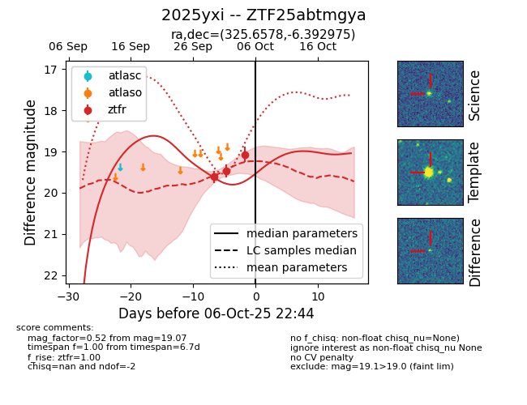
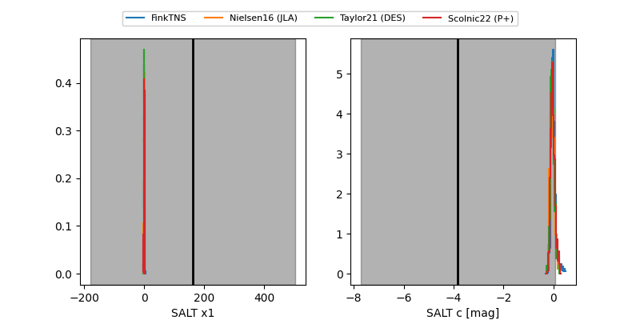

FINK: ZTF25abtmgya
Lasair: ZTF25abtmgya
ALeRCE: ZTF25abtmgya
TNS: 2025yxi
YSE: 2025yxi
ZTF25abtmgya (ztf,fink)
2025yxi (tns,yse)
equatorial (ra, dec) = (325.6578,-6.39298)
galactic (l, b) = (48.9094,-40.66898)


last ztfr=19.07
3 ztfr detections